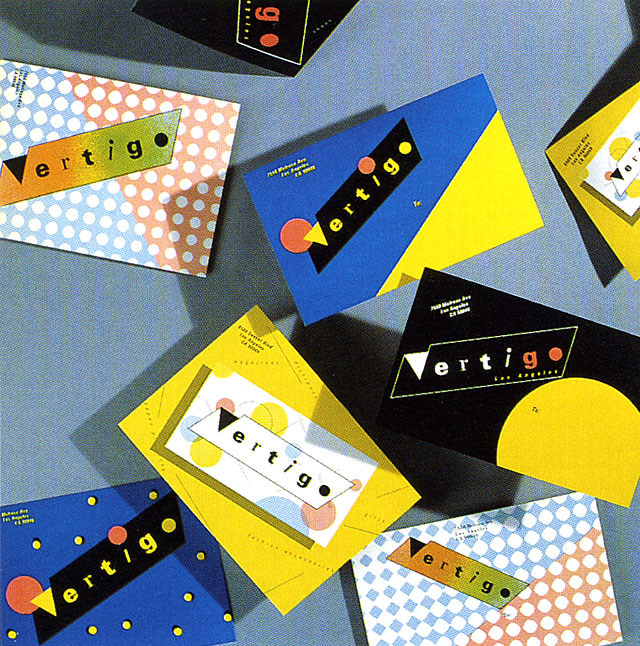

Who is She?
April Greiman (born 22 March 1948) is a designer. "Recognized as one of the first designers to embrace computer technology as a design tool, Greiman is also credited, along with early collaborator Jayme Odgers, with establishing the ‘New Wave’ design style in the US during the late 70s and early 80s." Greiman heads Los Angeles-based design consultancy Made in Space.